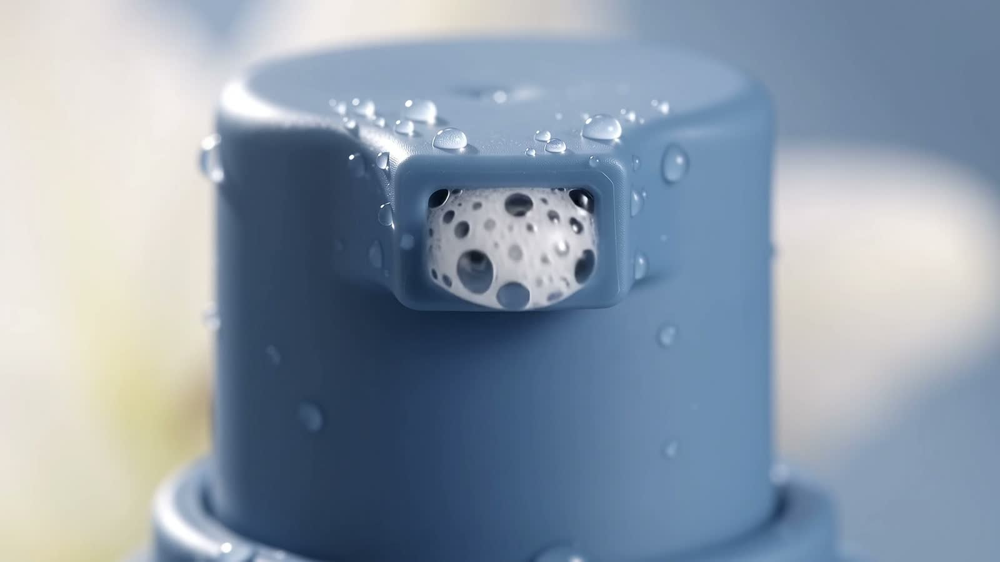
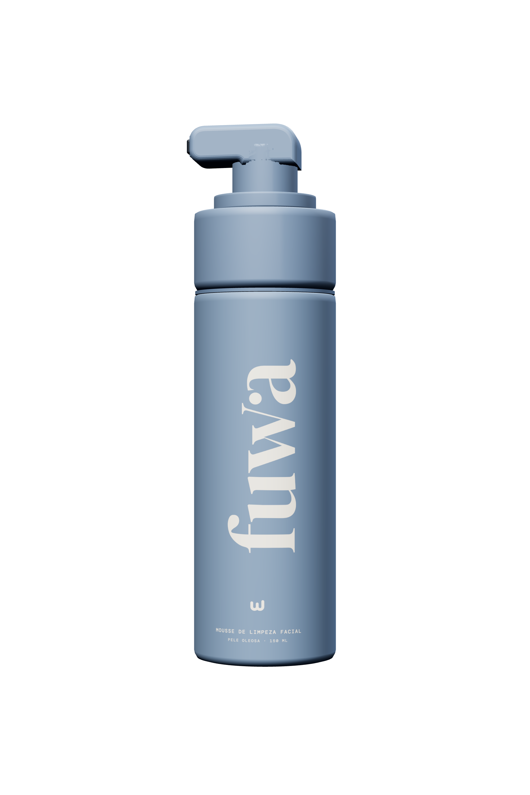
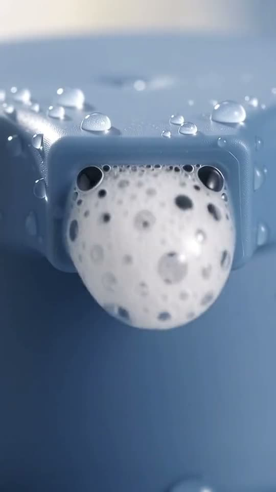
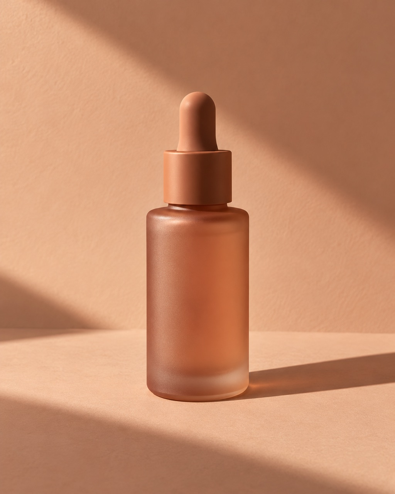
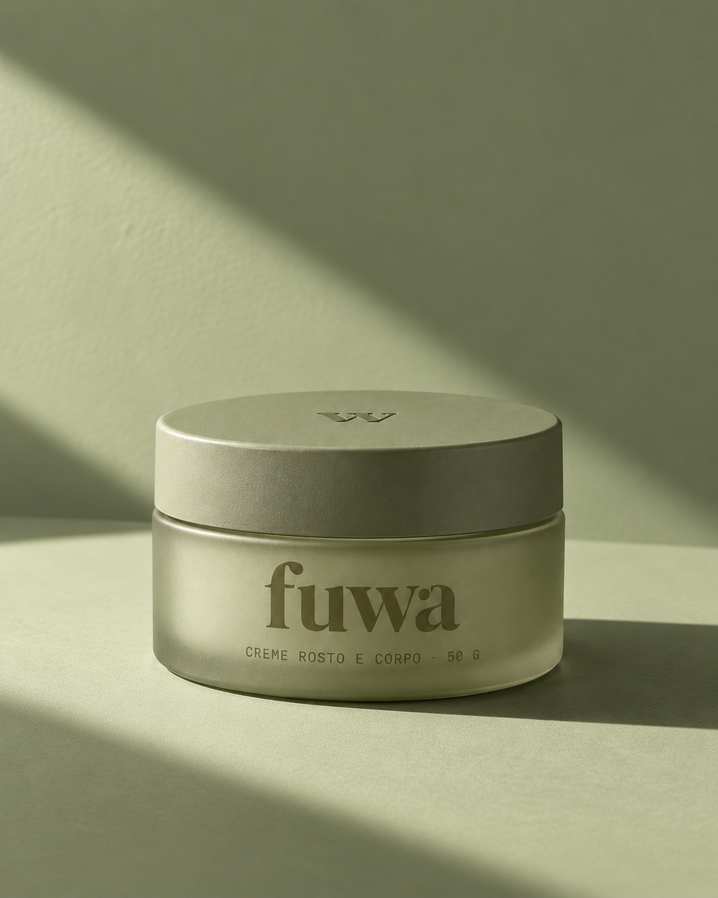
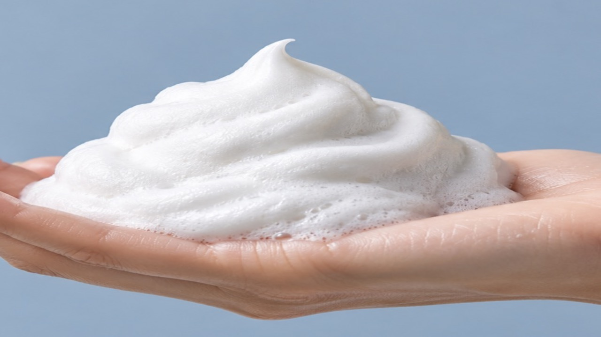

Limpeza
Eficiente e suave.
Mas não é para comer.
É para sentir.
Leveza em cada toque.
Limpeza que dá prazer de repetir.
Conheça seu novo ritual.

Mas não é para comer. É para sentir.
deslizepular introdução
Uma espuma cremosa feita para transformar a limpeza diária em um momento gostoso de cuidar de você.
Eficiente e suave.
Uma sensação leve.
Um toque macio.

Um aperto. Espuma pronta.
Cuidar de você não precisa ser uma sequência infinita de tentativas.
A gente leva o desenvolvimento a sério. Para você levar a rotina com leveza.
Seu primeiro toque pode ser o começo de uma nova rotina.
#MeuMomentoFUWA
Uma limpeza facial que combina praticidade e experiência sensorial.
Preço de lançamento · em estudo
Frete grátis · em estudo
Aplique a espuma no rosto úmido, massageie suavemente e enxágue.
em definição com o laboratório
150 ml · frasco com válvula espumadora

Leve como deve ser. Para completar a rotina sem pesar.
Disponível em breve
A mesma textura de chantilly. Agora para a pele toda.
Disponível em breveA proposta inicial é uma limpeza facial especialmente pensada para necessidades de pele mista ou oleosa. A indicação final depende da formulação e avaliação técnica.
Não. A FUWA é um cosmético de limpeza facial. Para acne, procure um dermatologista.
Não é um hidratante. É uma limpeza que não deixa a pele repuxando.

Seu próximo ritual começa com um toque.